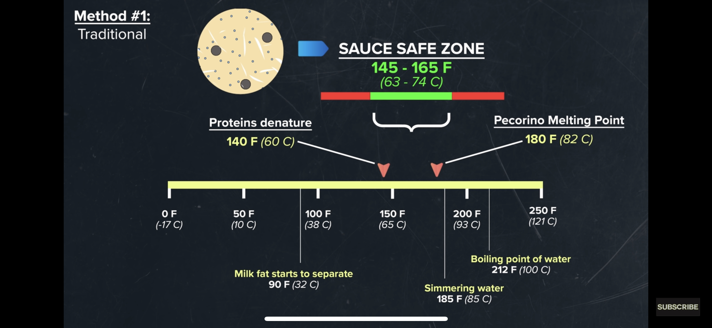

En romersk pastaret, der kombinerer ost og sort peber. “Cacio e pepe” betyder “ost og peber”, ordet “Cacio” stammer fra det latinske ord “caseus”, som er roden til det spanske “queso” og det tyske “käse”, som begge betyder ost.
Den klassiske “Cacio e Pepe” gør kun brug af stivelsen i pastavandet til at emulgere osten til at blive en jævn og silkeblød sauce.

Det er en svær teknik da ost har et meget snævert temperaturspænd hvor den er flydende nok til at emulgere, men ikke for varm hvor bindingerne mellem protein kæderne brydes, proteinerne siges at denaturere og osten danner klumper.
Kilde: YouTuber @EthanChlebowski.